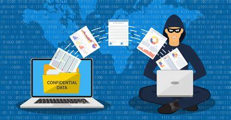
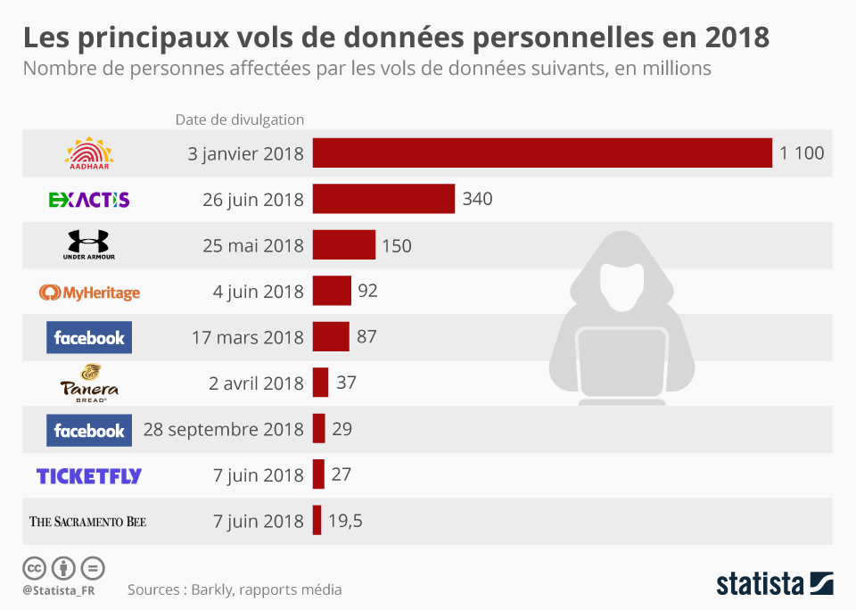

La protection des données sur internet, une nécessitée.
Introduction
À l'ère numérique actuelle, où l'Internet est devenu un élément essentiel de notre quotidien, la protection de nos données personnelles est plus cruciale que jamais. De la simple navigation sur les réseaux sociaux à la réalisation d'achats en ligne, nos informations privées sont constamment en ligne de mire. Dans cet article, nous allons explorer l'importance de la protection des données sur Internet et fournir des conseils pratiques pour naviguer en toute sécurité dans le monde en ligne.
L'importance de la Protection des Données sur Internet
Les données personnelles comprennent une vaste gamme d'informations, allant des noms et adresses aux détails financiers et médicaux. Ces informations peuvent être utilisées à des fins légitimes, mais elles peuvent aussi être exploitées à des fins malveillantes, telles que le vol d'identité, la fraude et le harcèlement en ligne. La protection de vos données personnelles est donc cruciale pour garantir votre sécurité en ligne et préserver votre vie privée.
Conseils pour Protéger Vos Données Personnelles
1. Utilisez des Mots de Passe Forts et Uniques : Utilisez des mots de passe complexes et uniques pour chaque compte en ligne. Évitez d'utiliser des informations personnelles évidentes et privilégiez une combinaison de lettres, chiffres et caractères spéciaux.
2. Mettez à Jour Régulièrement : Assurez-vous de mettre à jour vos mots de passe régulièrement. Cela réduit le risque de compromission de vos comptes en cas de violation de données.
3. Méfiez-vous des Courriels Suspects : Les attaques de phishing sont courantes. Ne cliquez jamais sur des liens ou ne téléchargez jamais des pièces jointes provenant d'expéditeurs inconnus ou suspects.
4. Utilisez une Authentification à Deux Facteurs (2FA) : Activez l'authentification à deux facteurs chaque fois que c'est possible. Cela ajoute une couche de sécurité supplémentaire en demandant une deuxième forme d'identification en plus du mot de passe.
5. Optez pour des Connexions Sécurisées : Lorsque vous entrez des informations sensibles, assurez-vous que le site utilise une connexion sécurisée (indiquée par "https://" et un cadenas dans la barre d'adresse).
6. Gérez les Paramètres de Confidentialité : Revoyez régulièrement les paramètres de confidentialité de vos comptes de médias sociaux et d'autres services en ligne. Limitez la quantité d'informations personnelles que vous partagez publiquement.
7. Utilisez un VPN (Réseau Privé Virtuel) : Un VPN chiffre votre connexion Internet, rendant plus difficile pour les pirates informatiques de surveiller vos activités en ligne.
8. Évitez les Wi-Fi Publics Non Sécurisés : Évitez de vous connecter à des réseaux Wi-Fi publics non sécurisés, car ils peuvent être vulnérables aux attaques.
Conclusion
La protection des données sur Internet est un sujet essentiel pour toute personne qui utilise la toile. En suivant des pratiques de sécurité en ligne rigoureuses, vous pouvez minimiser les risques d'atteinte à votre vie privée et de vol d'identité. Prenez le temps de mettre en œuvre ces mesures et d'éduquer vos amis et votre famille sur l'importance de la protection des données. Se protéger en ligne est un investissement précieux dans votre sécurité et votre tranquillité d'esprit.
